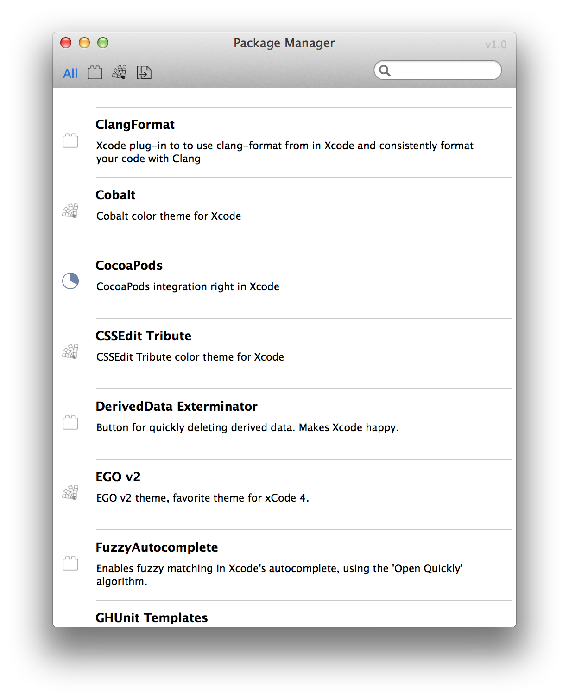
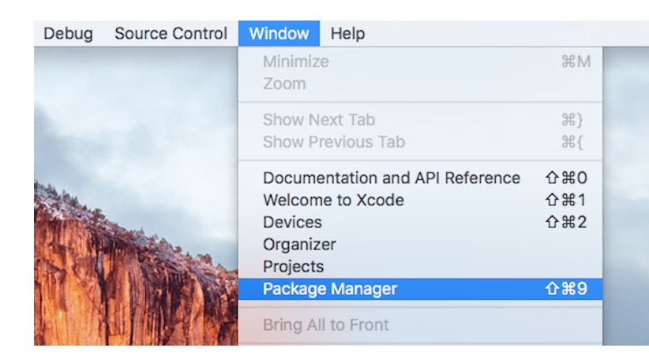

<script src="/javascripts/parallax.js"></script>
<section class="landing">
  
  <h1>Alcatraz</h1>
  <label>The package manager for Xcode</label>
</section>

<section class="content home">
  <section class="intro">
    
    <p class="description">Alcatraz is an open-source package manager for Xcode. It lets you discover and install plugins, templates and color schemes without the need for manually cloning or copying files. It installs itself as a part of Xcode and it feels like home.</p>
    <p class="drama">Plugins. Color Schemes. Templates.</p>
    
    
    
  </section>
  <section id="usage">
    <h3>Usage</h3>
    
    <p>Select Package Manager from the Window menu, then check or uncheck packages to install or remove them. You'll need to restart Xcode after installing certain packages, as indicated after installation.</p>
  </section>
  <section id="package-submissions">
    <h3>I want to submit my package!</h3>
    <p>Fork and edit the <a href="https://github.com/supermarin/alcatraz-packages">Alcatraz package repository</a> to include your package name, description, and URL in the plugins, color schemes, or templates section, and submit a pull request.</p>
    <pre>
{
  "name": "Excellent-Plugin",
  "url": "https://github.com/me/xcode-excellent-plugin",
  "description": "Makes Xcode stop, collaborate and listen."
}
    </pre>
  </section>
  <section class="installation">
    <h3>Install</h3>
    <p>
    Paste this into your terminal:
    <pre>curl -fsSL https://raw.github.com/supermarin/Alcatraz/master/Scripts/install.sh | sh</pre>
    </p>
    <p>Alcatraz is available for OSX 10.9 and Xcode 5 only.</p>
  </section>
  <section class="uninstallation">
    <h3>Uninstall</h3>
    <p>
      Delete the plugin:
      <pre>~/Library/Application\ Support/Developer/Shared/Xcode/Plug-ins/Alcatraz.xcplugin</pre>
      Remove all cached data:
      <pre>rm -rf ~/Library/Application\ Support/Alcatraz</pre>
    </p>
  </section>
</section>

